2018-09-01 八月的柏林，热情似火——记在欧洲锦标赛当志愿者的经历
目录
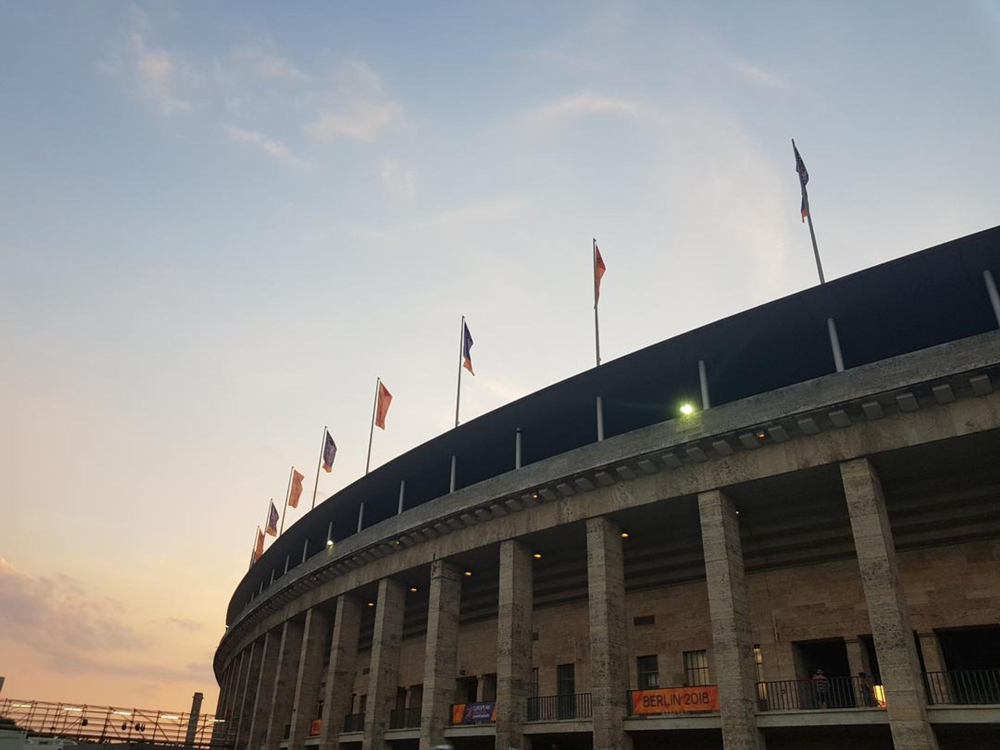
柏林这周真是太热情了！！！
为啥这么说呢，因为，一向冷酷的柏林在本周三气温达到了史无前例的37度。啊啊啊啊啊！
大家都说，气温这么高，是因为柏林要迎接最近在这儿举办的欧洲田径锦标赛。
组委会可能没有预料到这种天气，毕竟往年，柏林8月的平均气温都是19，所以，根据这个数据，给我们志愿者准备的服装里有防雨外套和厚夹克而没有短裤🤣也是情有可原的吧！
早在去年，这个志愿者活动的报名就开始了。但是直到今年5月份，我们才开始线上线下的培训，Kickoff Party，分发装备等。
这是我们领到的装备。
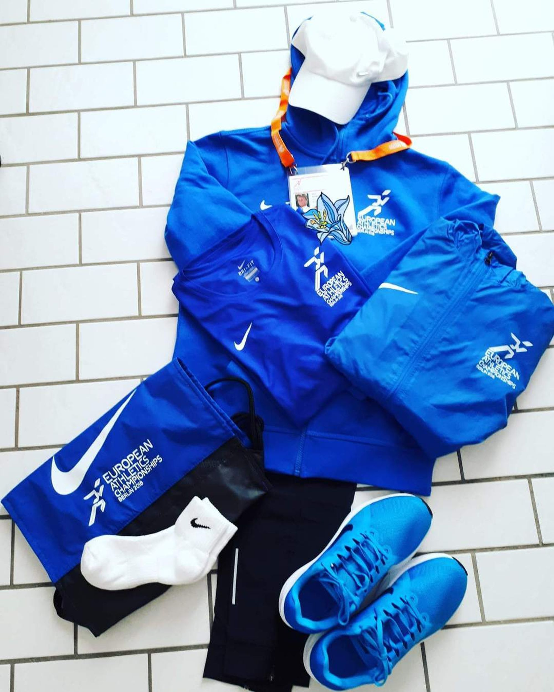
我这次被分到了Media Group组，主要职责是为200多名记者、摄影师和主持人在这7天里的工作提供便利。Midia Group 有90多个成员，Team leader来自澳大利亚，助理来自法国，这两个人是付薪工作的，其余的都是志愿者。Media下面又分了好几组，我们Main Media Center的团队如下：早班和晚班。
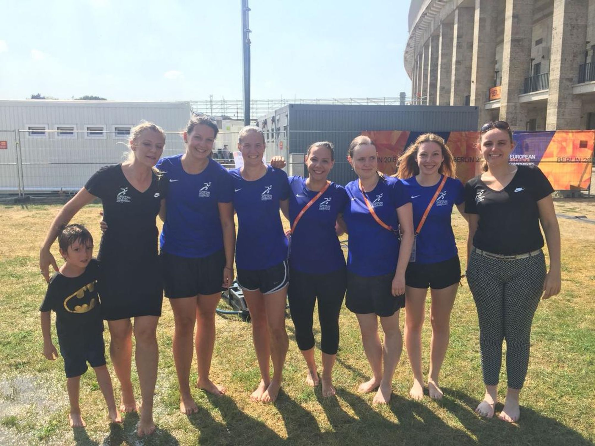
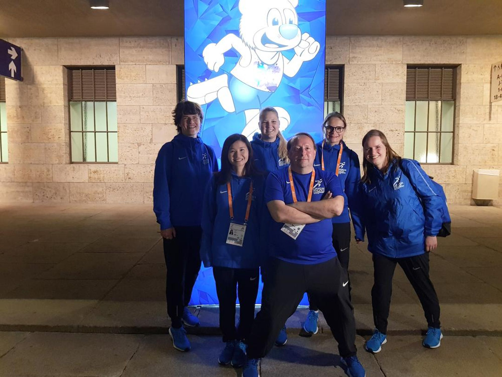
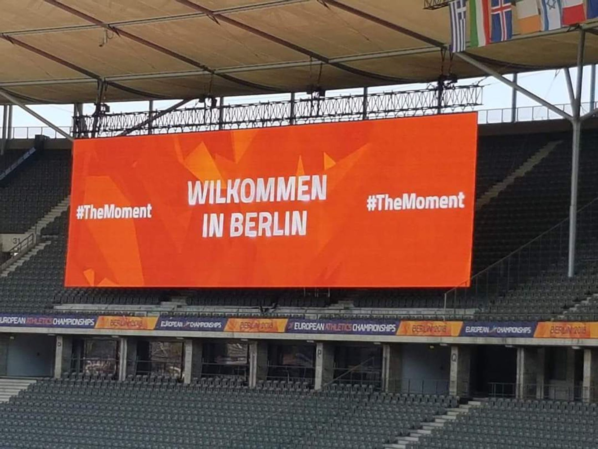 这是我第一次做大型赛事的志愿者，心里有点紧张，第一天去报到时被领到新闻媒体中心的大棚里，一边做自我介绍一边努力记住别人的姓名，加入他们的话题。
比赛第0天就让我震惊了。虽说欧洲语系相近，语言对于他们非常好学，但组里面确实个个人都是语言专家。
印象最深的是，我和Anke坐在欢迎台前，走进来一对长相不错衣着得体的男女，问我们要赛程表，给了他们之后，他们又自己在那儿交谈了几句。
我没听出是什么语言，问Anke，他们说的是啥语言啊?
Anke回答：Lettish。
我：Lettish, Lettland（拉脱维亚的啊），你怎么知道是Lettish的？
Anke：我会说啊。然后就开始讲小学时候去Riga那边交流的故事。
我：厉害…
我们组的志愿者大部分来自德国，有一个戴着棕色镜框的很有斯文气质的老太太来自法兰克福。她人非常热情，非常负责，我很好奇她为什么要来做志愿者，有一天下午只剩我们两个人在欢迎桌前，刚好不忙，她给我讲了一下她的经历。
她说现在退休啦，没事啦，来帮帮忙也是好的。况且她太喜欢柏林了，有这样的机会当然想来。我说你的英语真的很好诶，讲话时语法几乎不会错。她说，哎呀，你还观察的真仔细。我小时候就去了英国，大学读了英美文学，毕业了做了老师，教英语，之后因为先生的工作才来法兰克福的。
我问：那你更喜欢德国还是英国呢？ 她说：没有更偏爱。我两边都生活了二三十年，自己是德国人，回到这儿，当然觉得这边的一切都非常亲切。但是英国是我年轻时候待的地方，你知道年轻的时候待过的地方，都令人难忘。
我：那你来德国之后做什么工作呢？也是老师吗？
她：开始我在北威州，我的资格证是有效的，就继续当了几年老师。德国不同州的规定是不一样的，后来去了黑森州，就不再有效了，我就去了图书馆工作。
她还说她先生带的中国学生都非常聪明努力，要我写下自己来自的地方，她回去问问那两个学生。
德国的志愿者虽多，但是柏林本地人很少。有一个大叔，第一天穿着柏林赫塔球队标志的裤子，一看就是一个柏林人。他可真厉害，会6门语言。他的志愿者经历也很丰富，世界杯欧冠EuroVision都帮忙过，他说已经做志愿者十几年了。
另一个柏林本地帅哥，每天夜班快结束的时候必然变出一大袋薯片加一罐蘸料。然后带着我们坐在那儿吃，吃完，心满意足，下班。
法国姑娘Emilia，刚从中国旅游回来，跟我吐槽说，北京找不到什么吃的，上海太热了😂。她是一个老师，我问她教啥，她说所有科目都教，学生从3到12岁都有。我有点惊呆了，因为想起以前看过新闻，国内有些地方因为学生少，所以一个老师会教不同年龄的很多学生的所有科目。没想到法国也有这样的情况，如果有，那一定是因为穷以外的原因吧。
前年她花了两千多欧去里约做志愿者。T恤带回去给自己的妹妹，妹妹觉得很骄傲，因为上面有里约的标志，每节体育课都穿去。通过她我才知道，大型赛事的志愿者要提前非常久报名，她和组里的另一个女孩也报名了2020年东京奥运会的志愿者。
我们工作的欢迎台，每天都有人问不同的问题，有的人是带口音说简单的英文，有的人的英语快到要说两个again，有人抱怨天气太热/空调太冷，有人为比赛结果而喜悦/忧愁。
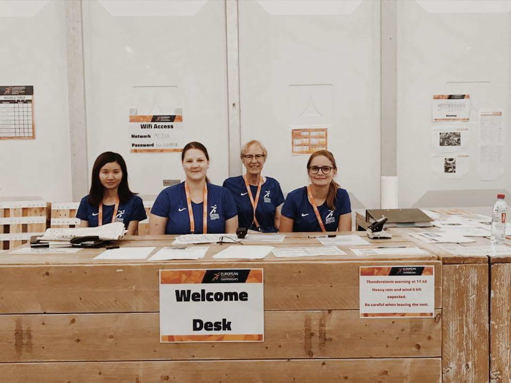
这两百多个人里，有很大一部分是摄影师。他们搬着大大的器材进来，大多都是不修边幅的有着啤酒肚的中年大叔。但不要小看他们，因为当比赛结束的时候，他们能快速的从体育场回到媒体中心，拿着器材能健步如飞，回来就铆足了劲修图。还有一部分是记者，记者的风格就完全不一样，斯斯文文的，问话的时候也非常客气，脚步声也更轻盈。印象很深的是一个英国出生的拿着德国护照在法联社工作的帅哥，他对这三个国家的比赛都很关注，每天都会来前台用德语聊比赛。
这几天也是时不时出状况，第一天网连不上，第二天没有瓶装饮用水，第三天雷暴天气，差点要疏散群众，第四天客户穿着长袖过来，抱怨空调太冷， 第五天咖啡的纸杯被消耗了而没有来得及补货。还好这些问题都有解决。
我虽然不懂这种运动赛事的盈利方式，但是还是觉得这次组委会的准备稍微有点不足。例如，瓶装饮用水和咖啡杯的问题完全可以避免。但是也知道了并非所有事情都能完美准备，也学到了一些紧急事情的处理方法。但是，也希望下次能尝试不同领域的志愿者。
除了媒体中心，我们也被要求在场地内工作，负责摄影师的无障碍摄影。在场地内工作太有意思了，观众太热情了，氛围太好了，夕阳太美了。只是不能拍运动员的照片。
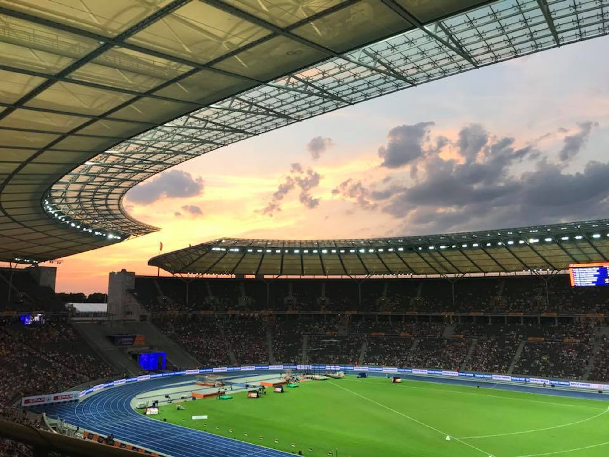
这次田径锦标赛，除了主要的场地奥林匹克体育场，柏林在GedächtnisKirche 威廉皇帝纪念教堂旁边也搭起了一个场地，用来服务马拉松比赛和颁奖典礼，我也很喜欢Breischeidplz这儿。第一次看到这个是在培训的时候在PPT上画有概念图，当时想，教堂的残骸和运动会海报的颜色冲击形成了明显的对比，在教堂旁，运动会都变得好有气质啊。
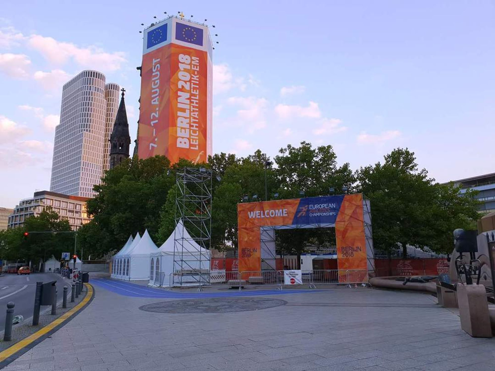
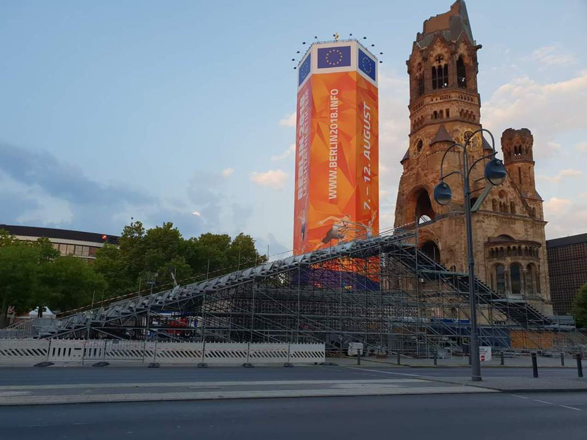 8号看到有一个朋友在朋友圈分享他08年北京奥运会当志愿者的经历，不禁想，10年之后的感叹，意义在什么呢。那么，应该就是，时间会过去，留下了被时间经过的我们。因为我们身上带着这些美好活动的印记，他们是不会消逝的。
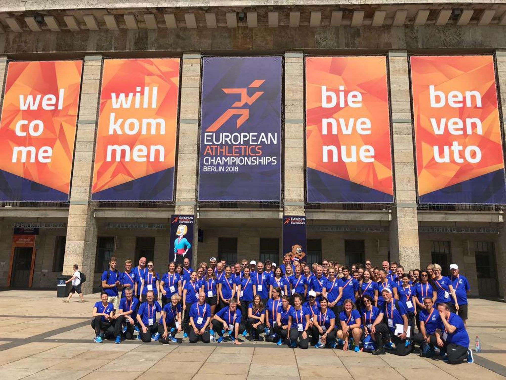
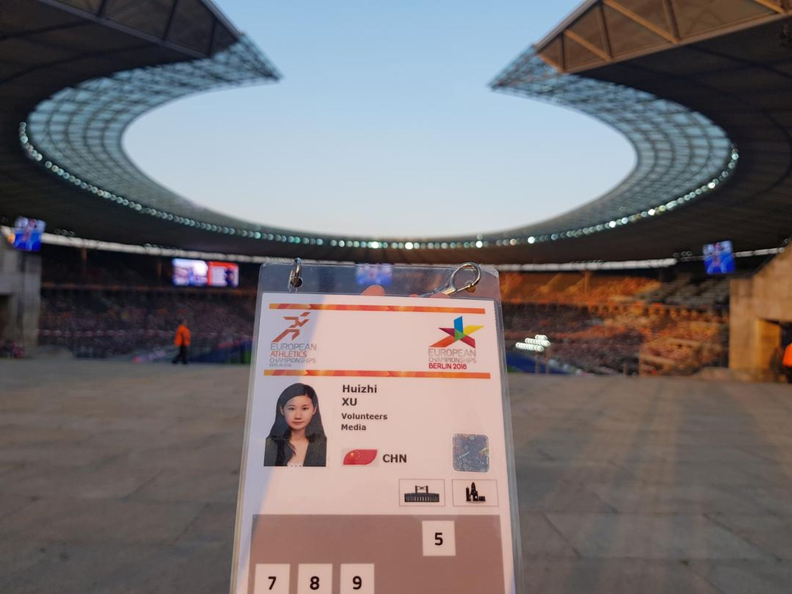